what you need to bake bread
— and what to use instead, if you don't have it

Kitchen scale, 1 g steps
Bread is chemistry. A cup of flour can weigh 120 g or 160 g — that's a different dough.
No scale? Sorry — buy one:
- aHonestly — get one. The cheapest digital scale works. It's the one tool with no good swap.
- bFor starter and salt: 1 g precision matters most. 7 g of salt vs 10 g is a different bread.
Grams, not cups
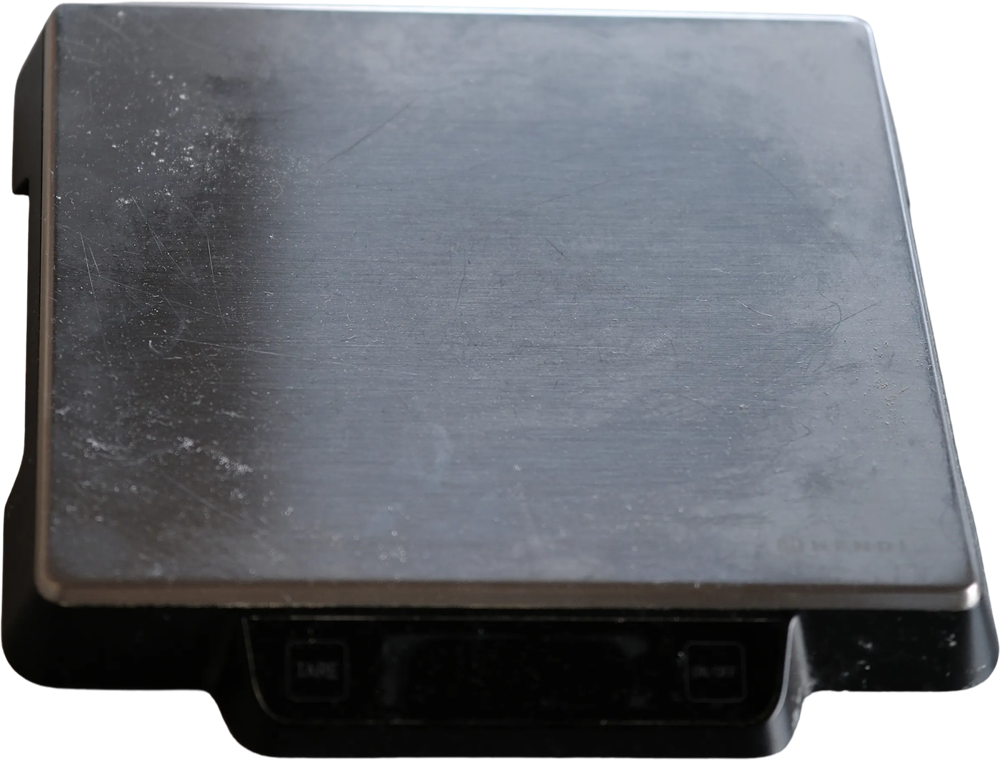
Big bowl + spoon
The dough triples in size while it rises. Give it room.
No bowl or spoon? Use:
- aAny pot or a large food container — at least 3 litres for 1 kg of dough.
- bYour hand instead of a spoon — wet it first, dough won't stick.
- cAn old bank card instead of a dough scraper — to scrape the bowl and shape the dough.
No mixer needed. Ever
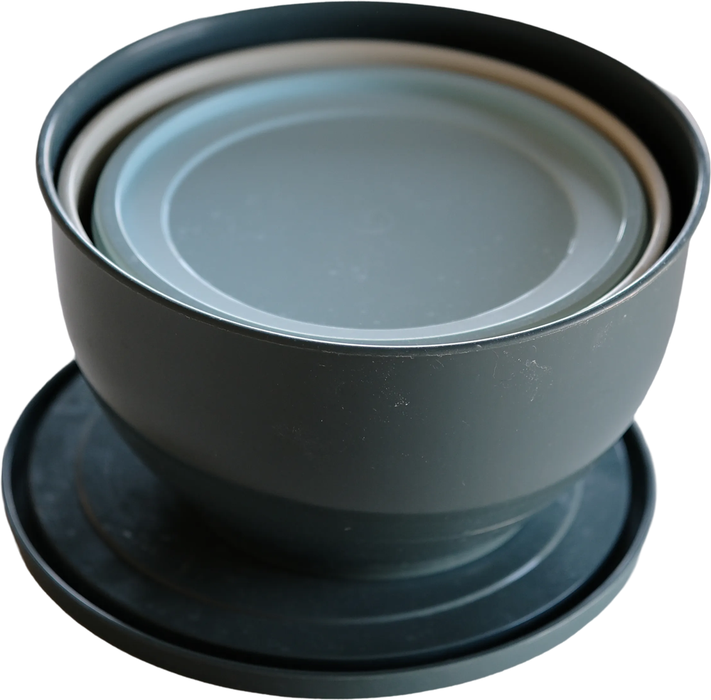
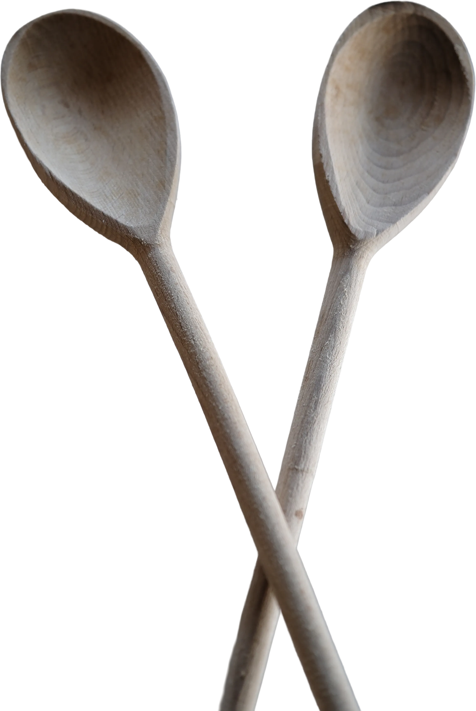
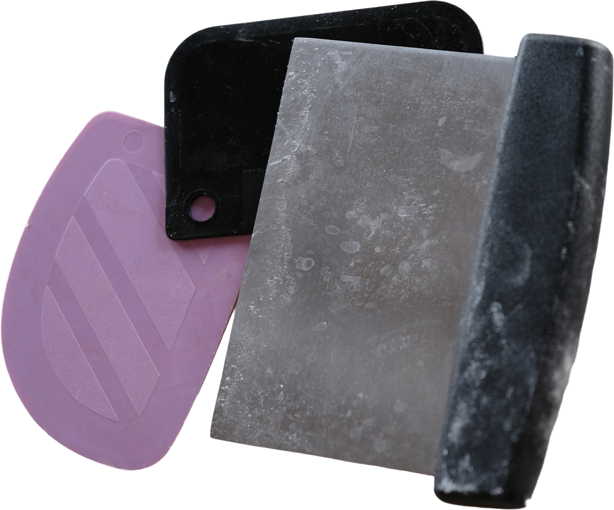
Proofing basket (banneton)
Holds the shape overnight in the fridge, so the loaf doesn't spread flat.
No basket? These work just as well:
- ✓A bowl lined with a kitchen towel — cotton or linen, not terry, and flour it well.
- ✓A colander + towel — air flows from below, crust gets a nice skin.
- ✓A plastic container with a lid — no cap needed, the lid keeps it from drying.
Tip: rice flour on the towel — nothing sticks.
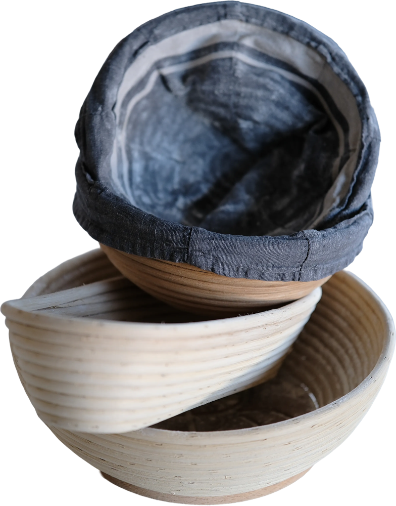
Cast iron pot with a lid
Traps steam for the first 20 minutes — that's what lets the loaf rise and open.
No cast iron? These work just as well:
- ✓A roasting bag on a tray — cut it open after 20 min, like taking the lid off.
- ✓Any oven-safe pot with a lid — ceramic, glass, steel. Check the handles.
- ✓A tray + a pan of boiling water below it — steam without a lid. Remove the water after 20 min.
Steam = rise = open crumb
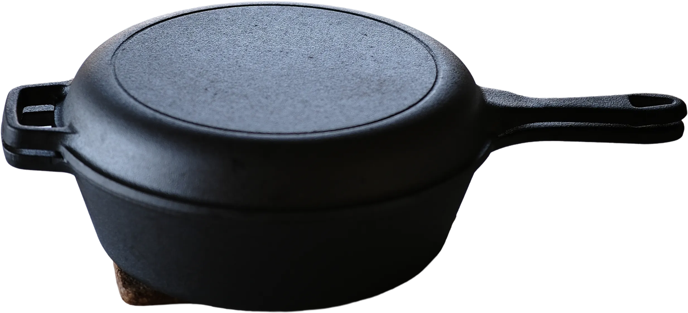
Razor blade or lame
A cut tells the bread where to open. Without it, it bursts wherever it wants.
No blade? These work just as well:
- ✓The sharpest knife you have — serrated works too. One quick confident cut.
- ✓Kitchen scissors — snip a few "spikes" on top. Looks great.
- ✓A razor on a wooden coffee stirrer — a DIY lame that costs nothing.
Cold dough cuts easier
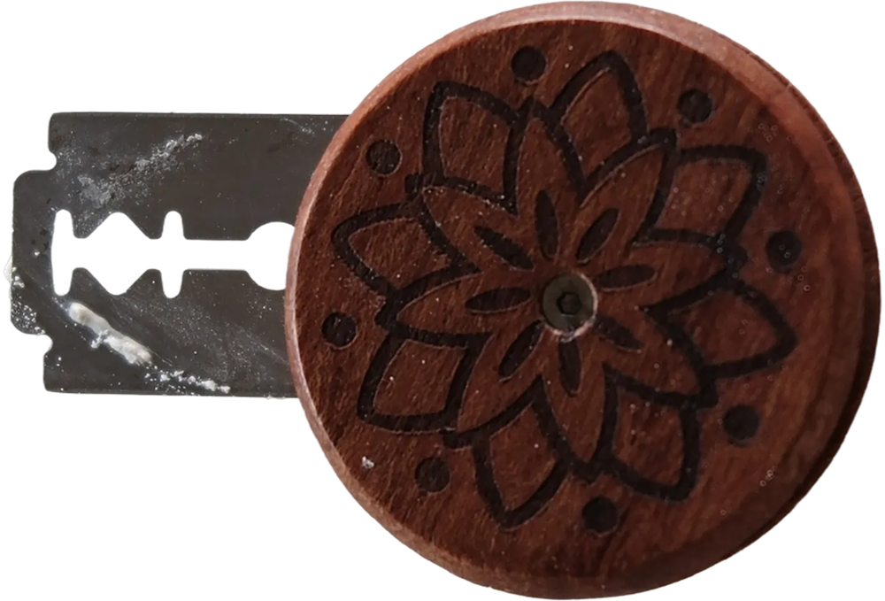
Parchment + oven mitts
The pot is 250 °C. Parchment lets you lower the dough in without touching it.
No parchment or mitts? Use:
- aA teflon baking mat — reusable, lasts for years.
- bA thick folded towel instead of mitts — dry only. A wet towel burns through instantly.
Please don't skip the mitts. 250 °C doesn't forgive.
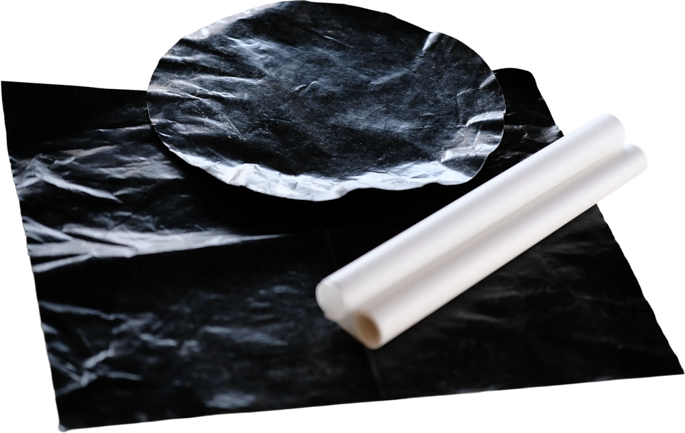
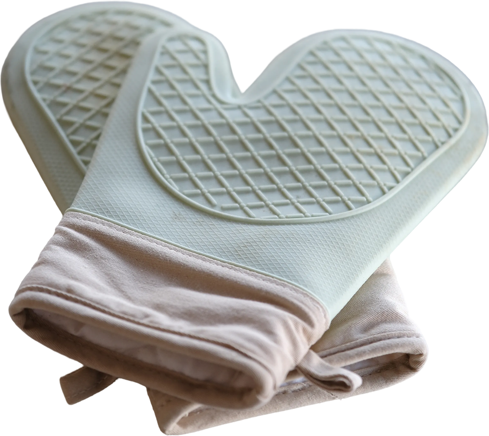
Cooling rack
The loaf keeps steaming for an hour. On a flat plate, that steam turns the bottom soggy.
No rack? These work just as well:
- ✓The rack from your oven — pull it out, let the loaf cool on top.
- ✓Two wooden spoons on the table — lay the loaf across, air flows underneath.
- ✓Stand the loaf on its side — lean it on something, turn it once or twice.
And wait 1 hour before cutting — the crumb is still setting.
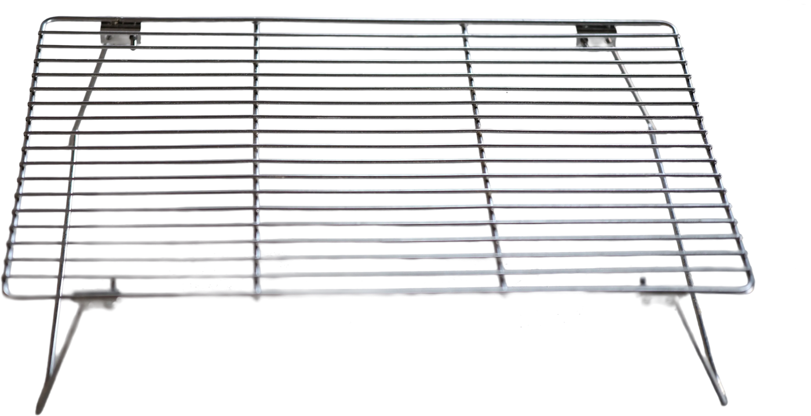
Probe thermometer
Dough above 26 °C ferments too fast and gets weak. This is how you know.
No thermometer?
- aUse water from the fridge in the mix — keeps you safely below 26 °C most of the year.
- bWatch the dough, not the clock — +50–60% in volume, bubbles, a jiggle.
You DON'T need: a mixer, a proofer, special flour from abroad.
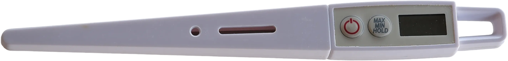